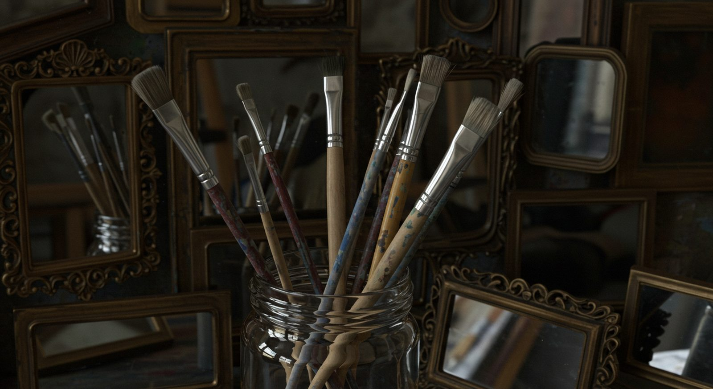

For those who are familiar with the biblical story, we are told that humans were created in the image of God (Genesis 1:26–27). However, people have debated what this actually means for hundreds of years. Does this have to do with our ability to reason, moral awareness, or imagination? Maybe it means we were made to understand and appreciate the World around us. While these are noble traits, are these the things that make us in the image of God?
Maybe some of these characteristics point to a difference between us and the other creatures of the world, but the lines of what makes us different from other living things may not be as concrete as we may want to believe. What’s crucial is defining who we actually are and the responsibility we were given. This carries a huge amount of weight and as God’s representatives on the earth, we have a charge to take care of His creation and a responsibility to rule the World the way God would rule.1
If we assume this meaning is intended, it raises some powerful questions for those of us in the arts and similar professions. What does it mean to design as someone made in the image of a Maker? Does our work have significance beyond the things we produce? And what if we understood our craft as our way of fulfilling our prior responsibility?
The Maker’s Mark in Us
Before any of us ever picked up a pencil, stretched a canvas, or pushed a pixel, we were already image-bearers.
To comprehend the importance of this statement, we need to understand the world of the biblical writers.
In the ancient Near East, images possessed a good deal of political and religious weight. Kings erected statues in an effort to cement their dominion over a people and a land.2 Depending on the pantheon, rulers were thought to be images of the gods.
The Babylonian Mīs-pî and Pīt-pî rituals were performed over newly fashioned statues. With the aid of incantations, the image was believed to be suffused with the spirit of the god and thereby transformed from an inanimate object to a living, breathing entity.
Consider now what is said in the early chapters of Genesis. God also has images. His, however, are not made of wood or stone. They are of the living and the breathing. God creates man in His own image and breathes life into him (Genesis 2:7). This account is indicative of the earlier practices.3 The biblical account goes further. The image of God is not to be confined to rulers and kings, and to statues in temples. Male and female, in all of their humanity, are given the privilege and responsibility to be God’s representatives in His creation.
This means that the image of God is an identity that is synonymous with a call and a responsibility. The call and responsibility given to all people makes us God’s image on this earth. People have the responsibility to represent God and take care of His creation. Therefore, an understanding of the image of God helps one find God’s purpose for one’s life.
When viewed this way, being created in the image of God is referring to our identity and our calling. By calling, I’m not referring to a job or profession. I am referring to our place in God’s world, a place where we represent Him and where we care for His creation.
When representing someone, a calling is definitely present. New Testament scholar N. T. Wright provides a helpful analogy for what that calling might look like. He describes human beings as angled mirrors, reflecting God’s wisdom and care to the world while receiving and focusing creation’s praise to God.4 I find his analogy to be very beautiful and meaningful. A mirror doesn’t produce what it reflects. A mirror receives something and radiates it outward.
That’s our responsibility with respect to our work.

A worker doesn’t bear God’s image because they can make things. We bear His image, whether we’re artists, designers, or people who would never describe themselves as a creative person. Making things is one way of exercising that calling.
That’s very encouraging. Our work can be stewardship, bringing clarity to the confusing and making the beautiful and useful where it’s needed. It doesn’t have to be large or revolutionary to have importance. The smallest decisions can be the largest when it improves the largest experience. What’s important is the work is done with responsibility and care. The outcome of the work doesn’t have to blow people away to be meaningful. It’s more meaningful if it’s done responsibly.
When we make, we reflect the Maker in the world He created.
Collaboration as Shared Stewardship
Now, it’s also true that much of our making includes other individuals. Some of the most meaningful work happens when people with a variety of skills, experiences and perspectives come together toward a common purpose.
Look at the building of the Tabernacle. We see God selecting and appointing Bezalel, filling him with His Spirit, and endowing him with wisdom, understanding and craftsmanship (Exodus 31:1–6). God doesn’t, however, leave Bezalel to accomplish the task single-handedly. Oholiab is also appointed, joining him along with other skilled artisans.
This probably sounds familiar to those of us in the design field.
Navigating feedback can be a challenge. We can get lost and frustrated in the shuffle, but more often than not, we gain clarity and learn to enhance our designs with the help of our peers. It is true we can often do our jobs quicker and with better results if we were to do the work alone.
But recognizing our blind spots and relying on others’ insights to identify problems or assumptions that we’ve overlooked can move the design process along in ways we couldn’t without collaboration.
I see this as a good analogy to our calling and responsibility as image bearers of God. If it is true that all of us have some responsibility as stewards over God’s creation, then trusting and working with others to fulfill that responsibility may be a way to serve God.
Not all work requires collaboration. There’s a lot of value in being able to work independently. However, partnership doesn’t always equate to compromise. It can be an opportunity to serve humbly and trust someone else to do their job. It can allow us to recognize that our work can transcend our own individual contribution.
There are still design constraints to work within. There are still deadlines, limitations, and trade-offs. Recognizing ourselves as image-bearers doesn’t change this.
But it does give us a way to reframe our thinking.
A blank page may not always feel like a theological place to reflect, but sometimes you have to finish the task in front of you.
The way we’ve structured our lives to make, build, and design is indeed a reflection of our theological beliefs about ourselves and humanity.
Think of the next time you have to engage in the process of doing what you were created to do. Remember, you don’t have to reach the other side of your vocation to discover your true identity as an image bearer. You are one already.
Footnotes
- J. Richard Middleton, The Liberating Image: The Imago Dei in Genesis 1 (Grand Rapids, MI: Brazos Press, 2005).
- Melissa Eppihimer, “Assembling King and State: The Statues of Manishtushu and the Consolidation of Akkadian Kingship,” American Journal of Archaeology 114, no. 3 (2010): 365–80, doi.org/10.3764/aja.114.3.365.
- Benjamin D. Sommer, The Bodies of God and the World of Ancient Israel (Cambridge: Cambridge University Press, 2009); J. Richard Middleton, “Further Thoughts on the Imago Dei: After The Liberating Image,” Creation to Eschaton, August 5, 2014, jrichardmiddleton.com.
- N. T. Wright, “Being an Image Bearer with N. T. Wright,” video and transcript, BioLogos, January 16, 2013, biologos.org.